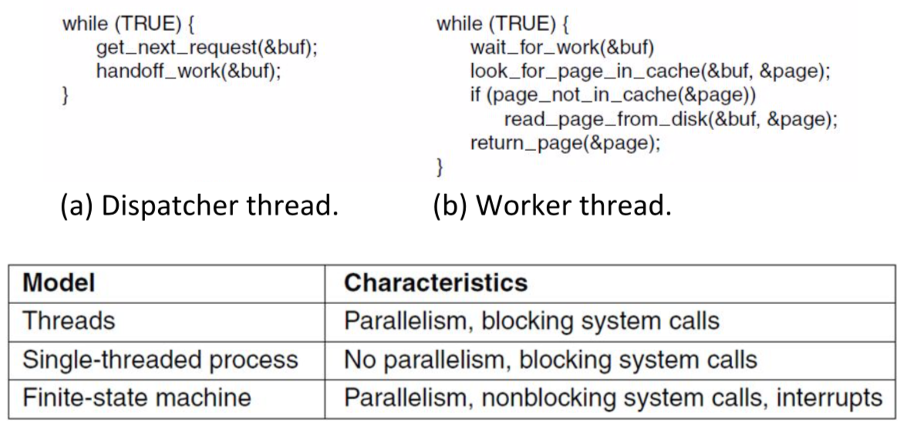
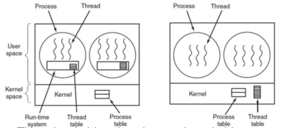
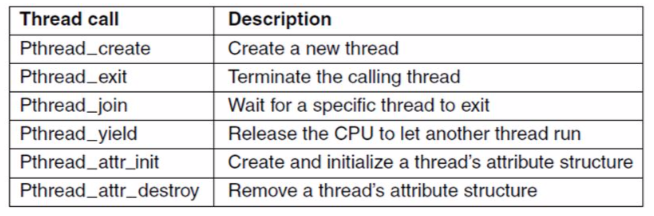

multithreaded execution: 1 process, N threads of execution
lightweight processes, allow space and time efficient parallelism
organised in thread groups, allow simple communication and synchronisation

threads are in the same address space of a single process
all info exchange done via data shared between threads
threads synchronise via simple primitives
each thread has its own stack, hardware registers, and state
each thread may call any OS-supported syscall on behalf of the process to which it belongs
User threads - pros and cons
(+) thread switching time is quicker, as no mode switch
(+) scalability customizability (since no in-kernel management)
(-) parallelism (blocking syscalls are problematic)
(-) transparency (typically needs app cooperation)

Hybrid implementations of threads:
thread multiplexing: one kernel thread runs everything
scheduler activation: scheduler takes care of blocking/unblocking
pop-up threads: kernel takes care of creating threads
POSIX threads (Pthreads)
pthread is a library interface. names may not always be the same.

Inter-process communication (IPC)
Processes need some way to communicate - to share data during execution
No explicit cross-process sharing, data must be normally exchanged between processes
Processes need a way to synchronise